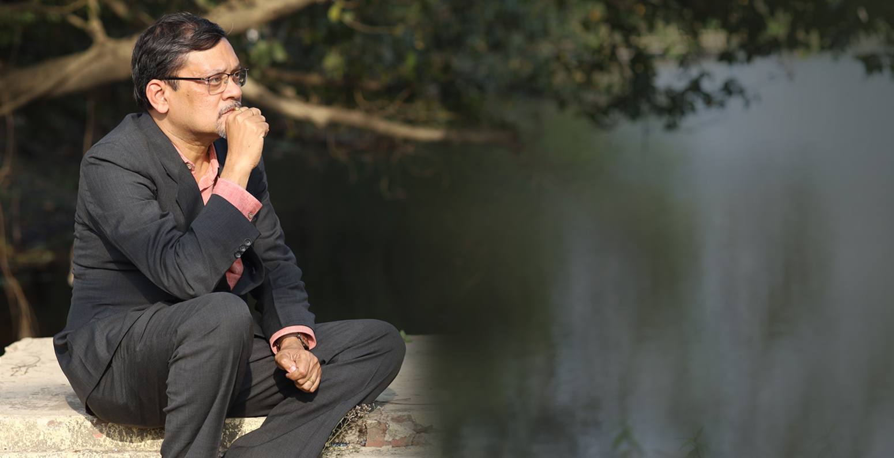

BioCV
BioCVAbout Anamitra
Anamitra Chatterjee, Accredited Executive Coach (EMCC) has had diverse education and
work experience of 25+ years in India & UK across Deutsche Bank and PwC, Hult Ashridge
UK
Anamitra Chatterjee has had diverse education and work experience of 25+ years in India & UK across
Deutsche
Bank and PwC, Hult Ashridge UK and IIMs in India. He is an Accredited Executive Coach (EMCC).
He has 11 years of Leadership Development & Executive Coaching practice. He has coached over 220
senior leaders
and 2500 hours. As Faculty, he designs and delivers executive education programmes on consulting
skills, leadership
and team development. As Facilitator, he has delivered training to over 3000
managers.
- Independent practice of 11 years, since 2012
in Leadership development & Executive coaching - Hult Ashridge Executive Education UK, since 2015
Accredited Executive Coach (EMCC) & Adjunct Faculty - Visiting Faculty (OB & HRM) IIM Kozhikode, since 2016
Visiting Faculty (Consulting Skills) IIM Kashipur, 2012-18 - Heidrick Consulting: Empaneled Associate, since 2020
Leadership Consultant, Executive Coach & Facilitator - Eruditus Executive Education, India: 2011-12
Director-Executive Coaching ILPSE INSEAD Singapore - PricewaterhouseCoopers (PwC) India: 2003-08
Head-Learning & Development (L&D) & and PwC Global L&E - Deutsche Bank AG: 1996-2000
Banking Operations & Relationship Manager
“My leadership development and executive coaching
practice is informed by my own belief in
Performance = Potential – (Internal) Interference. ”

Testimonial
I credit Anamitra for starting my own coaching and transformation journey. Many years back I experienced executive coaching for the first time with Anamitra my Executive Coach. It started a journey of over a decade where I not only grew professionally and personally but more importantly started my own coaching journey which has been profoundly fulfilling and transforming. I can confidently say he brings a unique perspective as a coach to most if not all situations. I wish him the very best and joy, fulfilment and growth to all his coachees.
Brajesh Bajpai Executive Coach & Commercial DirectorVodacom International
Executive coaching from Anamitra helped me in bringing a lot of self-awareness about myself, my personal priorities and its importance in life: how to achieve them. This coaching reinforced within me a fresh outlook on the importance of organizations, and people perspective to look at things differently.
Trilok, CXO Kantar, New DelhiAnamitra Chatterjee, holds two post-graduate qualifications:
PGDM (MBA)
from Indian Institute of Management (IIM) Calcutta &
PGD from London School of Economics
& Political Science (LSE) and a
Master's degree, MSc Masters in Executive Coaching
(AMEC) from
Hult Ashridge UK. He studied on a British Chevening scholarship at LSE,
UK. He got a Distinction in BSc - Economics (Hons) from Presidency
College. He is a
certified practitioner of psychometrics assessments:
Hogan & LVI360, Belbin, FIRO-B &
MBTI.
About Myself
Anamitra Chatterjee lives in Calcutta, India with his family and has a keen interest in travelling to mountains.
MoreVideo
MoreOur Clients